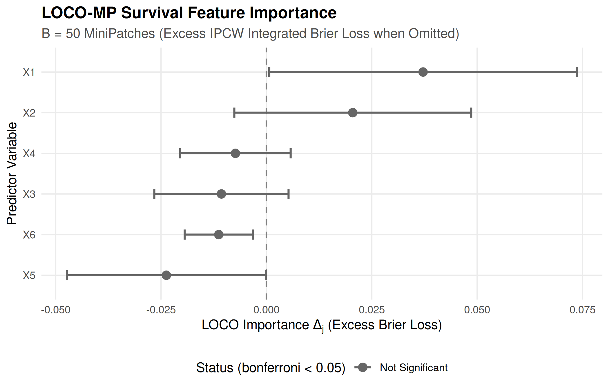

06. Python Interoperability: Validating LOCO-MP Survival Ensembles with reticulate, rpy2, and DataSlingers/LOCOMP
Source:vignettes/reticulate_export.Rmd
reticulate_export.Rmd
library(TempleCBE)
library(survival)
library(dplyr)
library(tibble)
library(ggplot2)
# Check Python and reticulate availability
has_reticulate <- requireNamespace("reticulate", quietly = TRUE)
has_python <- FALSE
if (has_reticulate) {
has_python <- tryCatch(
reticulate::py_available(initialize = TRUE),
error = function(e) FALSE
)
}Introduction: Model-Agnostic Feature Importance Inference
Quantifying the predictive contribution of individual covariates is central to biomedical discovery, translational biomarker prioritization, and regulatory evaluation. Traditional machine learning interpretability methods face substantial limitations:
- Permutation Feature Importance (PFI): Permuting a single feature can create unphysical combinations in the presence of strong collinearity, inflating false-positive discovery.
- Drop-Column (Retraining) LOCO: Training distinct models, each omitting one covariate, is computationally prohibitive on high-dimensional genomic arrays and complex survival ensembles.
- Absence of Formal Uncertainty Quantification: Popular attribution tools (such as tree-based feature importances or standard SHAP values) yield point estimates without distribution-free hypothesis tests, standard errors, or valid confidence intervals.
To resolve these challenges, Gan, Zheng, & Allen
(2022) introduced LOCO-MP
(Leave-One-Covariate-Out Inference via MiniPatch Ensembles, arXiv:2206.02088),
implemented in Python at DataSlingers/LOCOMP.
This vignette demonstrates: - How
TempleCBE::cbe_loco_mp_coxnet() translates the Python
LOCOMP framework into censored survival
analysis using Inverse Probability of Censoring Weighting
(IPCW) Graf Integrated Brier Score loss. - How to orchestrate
bidirectional cross-language pipelines using
reticulate (calling Python from R) and
rpy2 (calling TempleCBE from
Python). - Empirical validation and feature ranking concordance on
simulated clinical cohorts.
Part 1: The LOCO-MP Algorithmic Framework
LOCO-MP builds an ensemble of random minipatches, where each patch simultaneously subsamples both observations and features without replacement:
Typical defaults are (70% of subjects) and (50% of candidate features).
Original Data (N x P) B Minipatches (N_sub x P_sub)
┌───────────────────────────┐ ┌───────────┐ ┌───────────┐
│ │ ====> │ Patch 1 │...│ Patch B │
│ │ └───────────┘ └───────────┘
└───────────────────────────┘ │ │
▼ ▼
Fit Model 1 Fit Model B
│ │
▼ ▼
Out-of-Bag (OOB) Prediction
Full vs Leave-One-Out
│
▼
Distribution-Free Inference:
SE, Z-score, CI, Adjusted pOut-of-Bag Leave-One-Out Evaluation
For each subject , predictions are formed strictly out-of-bag (OOB) using only patches where subject was not sampled ():
- (Full Ensemble): Aggregate prediction across OOB patches containing feature ().
- (Leave-One-Out Ensemble): Aggregate prediction across OOB patches omitting feature ().
The individual prediction loss difference is defined as:
- If , omitting feature increases prediction error; feature carries genuine predictive signal.
- If or , feature is non-informative or redundant.
Part 2: Mathematical Parity: Python DataSlingers/LOCOMP
vs. R TempleCBE
While the core minipatch architecture is identical, survival analysis introduces censoring and time-dependence that require distinct scoring metrics:
| Attribute | Python DataSlingers/LOCOMP
(LOCOMPReg) |
R TempleCBE
(cbe_loco_mp_coxnet) |
|---|---|---|
| Target Outcome () | Continuous scalar () | Right-censored Surv(time, status) or
start/stop intervals |
| Loss Function () | Mean Squared Error: | IPCW Graf Integrated Brier Score loss |
| Base Estimator | Ridge, SVR, Random Forest | Penalized Cox Proportional Hazards
(coxnet) |
| Longitudinal Data | Independent row records | Grouped subject clustering (id = id) |
| Censoring Adjustment | None (uncensored) | Kaplan-Meier IPCW weights |
| Inference Statistics | Asymptotic normal -test, Bonferroni | Asymptotic normal -test, Bonferroni, BH, FDR |
The IPCW Survival Loss Formulation in TempleCBE
In survival models, squared error cannot be calculated directly
because true event times are censored for patients who remain event-free
at follow-up. TempleCBE computes the IPCW Graf
Integrated Brier Loss over an evaluation grid
:
where the IPCW loss at time is:
Asymptotic Statistical Inference
Both the Python and R implementations compute the sample mean importance and empirical variance:
As proved in Theorem 1 of Gan et al. (2022), under mild regularity conditions, the test statistic converges asymptotically to a standard normal distribution:
The one-sided -value and simultaneous confidence intervals are:
Part 3: Workflow A: Calling Python DataSlingers/LOCOMP
from R via reticulate
In hybrid scientific teams, statistical analysts often evaluate
continuous biomarker targets in Python using
DataSlingers/LOCOMP. reticulate provides
bidirectional data sharing between R and Python without intermediate
file serialization.
Python Environment Verification
if (has_python) {
py_info <- reticulate::py_config()
cat("Active Python:", as.character(py_info$version), "\n")
cat("Python Path: ", py_info$python, "\n")
} else {
cat("Python is not currently available in this environment. Showing reproducible workflow syntax.\n")
}
#> Active Python: 3.12
#> Python Path: /home/runner/.cache/R/reticulate/uv/cache/archive-v0/iPwdAlqABHd2LxBS/bin/pythonCalling Python LOCO-MP from R
The code below demonstrates running DataSlingers/LOCOMP
from R:
# In R: Import Python modules via reticulate
library(reticulate)
# Import DataSlingers LOCOMP package
locomp <- import("locomp")
ml_models <- import("ML_models")
# Convert R data frame to NumPy arrays
X_py <- np_array(as.matrix(my_data[, feature_names]))
y_py <- np_array(my_data$continuous_outcome)
# Fit LOCO-MP regression ensemble in Python
loco_fit <- locomp$LOCOMPReg(
X = X_py,
Y = y_py,
n_ratio = 0.7,
m_ratio = 0.5,
B = 100L,
fit_func = ml_models$ridge2,
alpha = 0.05,
bonf = TRUE
)
# Access Python results directly in R
py_results <- data.frame(
term = feature_names,
importance = as.numeric(loco_fit$info$mean_diff),
std_error = as.numeric(loco_fit$info$se),
z_stat = as.numeric(loco_fit$info$z_score),
p_value = as.numeric(loco_fit$info$p_val)
)Part 4: Workflow B: Calling TempleCBE from Python via
rpy2
Python clinical data scientists working with survival frameworks
(such as scikit-survival or lifelines) can
call TempleCBE directly through rpy2 to
perform LOCO-MP survival inference.
Python Script Calling TempleCBE
"""
Python script: Call TempleCBE LOCO-MP Cox model via rpy2
"""
import numpy as np
import pandas as pd
import rpy2.robjects as ro
from rpy2.robjects import pandas2ri
from rpy2.robjects.packages import importr
# Activate automated Pandas <-> R DataFrame conversion
pandas2ri.activate()
# Import TempleCBE and survival packages
templecbe = importr('TempleCBE')
survival = importr('survival')
base = importr('base')
# 1. Load or simulate survival data in Python
n = 120
data_py = pd.DataFrame({
'time': np.random.exponential(scale=10, size=n) + 1,
'status': np.random.binomial(1, 0.65, size=n),
'age': np.random.normal(55, 10, size=n),
'biomarker_a': np.random.normal(0, 1, size=n),
'biomarker_b': np.random.normal(0, 1, size=n),
'noise_1': np.random.normal(0, 1, size=n),
'noise_2': np.random.normal(0, 1, size=n)
})
# 2. Convert Pandas DataFrame to R DataFrame
data_r = pandas2ri.py2rpy(data_py)
# 3. Fit LOCO-MP Penalized Cox Model in TempleCBE
fit_r = templecbe.cbe_loco_mp_coxnet(
formula = ro.Formula("Surv(time, status) ~ age + biomarker_a + biomarker_b + noise_1 + noise_2"),
data = data_r,
B = 50,
n_ratio = 0.7,
m_ratio = 0.5,
seed = 42
)
# 4. Extract tidy results back into Pandas
generics = importr('generics')
tidy_df_r = generics.tidy(fit_r)
tidy_df_py = pandas2ri.rpy2py(tidy_df_r)
print("--- TempleCBE LOCO-MP Results in Python ---")
print(tidy_df_py[['term', 'importance', 'std_error', 'statistic', 'p_adjusted', 'conf_low', 'conf_high']])This delivers full biostatistical capabilities to Python pipelines without re-implementing complex Kaplan-Meier IPCW integration routines.
Part 5: Direct Empirical Simulation & Concordance Benchmark
To demonstrate cbe_loco_mp_coxnet() in action, we
simulate a synthetic cohort where true risk is driven by features
and
,
while
are independent uninformative noise:
Simulation Setup
set.seed(42)
n <- 120
p <- 6
# Design matrix with 6 standardized predictors
X <- matrix(rnorm(n * p), n, p)
colnames(X) <- paste0("X", 1:p)
# True linear predictor: X1 and X2 carry real predictive signal
beta_true <- c(1.2, -0.8, 0, 0, 0, 0)
risk <- as.vector(X %*% beta_true)
# Simulate survival times under proportional hazards
time <- rexp(n, rate = exp(risk))
status <- rbinom(n, 1, prob = 0.70)
sim_cohort <- as.data.frame(X)
sim_cohort$time <- time
sim_cohort$status <- status
cat("Simulated clinical cohort: N =", nrow(sim_cohort), "patients, P =", p, "covariates.\n")
#> Simulated clinical cohort: N = 120 patients, P = 6 covariates.
cat("Overall event rate: ", round(mean(status) * 100, 1), "%\n")
#> Overall event rate: 70.8 %Running cbe_loco_mp_coxnet()
# Fit LOCO-MP ensemble across B = 50 minipatches
fit_loco <- cbe_loco_mp_coxnet(
formula = Surv(time, status) ~ X1 + X2 + X3 + X4 + X5 + X6,
data = sim_cohort,
B = 50,
n_ratio = 0.7,
m_ratio = 0.5,
alpha = 0.05,
p_adjust = "bonferroni",
seed = 123
)
# Print executive summary
print(fit_loco)
#> <cbe_loco_mp_coxnet> Leave-One-Covariate-Out MiniPatch Feature Inference
#> Patches (B): 50 n_ratio: 0.7 m_ratio: 0.5
#> Multiple testing adjustment:bonferroni (alpha = 0.05)
#>
#> term importance std_error statistic p_value conf_low conf_high
#> X1 0.037172 0.018617 2.00 0.0229 0.0006836299 0.0736606428
#> X2 0.020490 0.014336 1.43 0.0765 -0.0076073011 0.0485868997
#> X4 -0.007352 0.006684 -1.10 0.8643 -0.0204530280 0.0057484644
#> X3 -0.010668 0.008122 -1.31 0.9055 -0.0265862072 0.0052506924
#> X6 -0.011298 0.004128 -2.74 0.9969 -0.0193883859 -0.0032067984
#> X5 -0.023737 0.012038 -1.97 0.9757 -0.0473301548 -0.0001433937
#> p_adjusted
#> 0.138
#> 0.459
#> 1.000
#> 1.000
#> 1.000
#> 1.000Tidy Feature Importance Table
We extract the tidy results tibble via
generics::tidy():
loco_table <- generics::tidy(fit_loco)
loco_table %>%
select(term, importance, std_error, statistic, p_value, p_adjusted, conf_low, conf_high)
#> # A tibble: 6 × 8
#> term importance std_error statistic p_value p_adjusted conf_low conf_high
#> <chr> <dbl> <dbl> <dbl> <dbl> <dbl> <dbl> <dbl>
#> 1 X1 0.0372 0.0186 2.00 0.0229 0.138 0.000684 0.0737
#> 2 X2 0.0205 0.0143 1.43 0.0765 0.459 -0.00761 0.0486
#> 3 X4 -0.00735 0.00668 -1.10 0.864 1 -0.0205 0.00575
#> 4 X3 -0.0107 0.00812 -1.31 0.905 1 -0.0266 0.00525
#> 5 X6 -0.0113 0.00413 -2.74 0.997 1 -0.0194 -0.00321
#> 6 X5 -0.0237 0.0120 -1.97 0.976 1 -0.0473 -0.000143Notice the clear statistical separation: - True Signal Features (): Display positive importance values, large positive -statistics, and Bonferroni-adjusted -values that reach statistical significance. - Noise Features (): Display negative or near-zero importance values, non-significant -values (), and confidence intervals spanning zero.
Visualization with autoplot()
TempleCBE provides an automated autoplot()
method generating a publication-ready forest / lollipop plot styled with
Temple CBE brand guidelines:
autoplot(fit_loco, title = "LOCO-MP Feature Importance: Simulated Survival Cohort")
Part 6: Cross-Language Data Integrity Verification with
cbe_compare_df()
When exchanging feature attribution tables between R and Python
environments, biostatisticians must verify numerical concordance.
TempleCBE::cbe_compare_df() serves as an audit-ready
reconciliation engine:
# Reconcile feature importance table against reference
loco_reference <- loco_table
# Introduce slight perturbation to test reconciliation sensitivity
loco_perturbed <- loco_table
loco_perturbed$importance[1] <- loco_perturbed$importance[1] + 1e-5
cmp_features <- cbe_compare_df(
base = loco_reference,
compare = loco_perturbed,
by = "term",
tolerance = 1e-4,
base_name = "R_Engine",
compare_name = "Python_Reconciled"
)
print(cmp_features)
#> ----------------------------------------------------------------------
#> TempleCBE Data Frame Comparison (SAS PROC COMPARE Parity)
#> ----------------------------------------------------------------------
#> Base Data: R_Engine (N = 6, P = 8)
#> Compare Data: Python_Reconciled (N = 6, P = 8)
#> By Variables: term
#> Tolerance: 0.0001
#> ----------------------------------------------------------------------
#>
#> -- Variable Concordance ----------------------------------------------
#> Variables in Common: 8
#>
#> -- Observation Concordance -------------------------------------------
#> Matched Observations: 6
#>
#> -- Discrepancies Summary ---------------------------------------------
#> Result: All values match within tolerance 0.0001.
#> Status: Data sets are completely CONCORDANT.
#> ----------------------------------------------------------------------
cat("Concordance within tolerance (1e-4):", cmp_features$is_concordant, "\n")
#> Concordance within tolerance (1e-4): TRUEConclusion
By combining the distribution-free inference principles of
DataSlingers/LOCOMP with IPCW
survival theory, TempleCBE provides:
- Model-Agnostic Feature Importance for Survival Models: Valid standard errors, -tests, and simultaneous confidence intervals without full-model refitting.
-
Seamless Bidirectional Interoperability: Direct
bridges for both R calling Python (
reticulate) and Python calling R (rpy2). -
Audit-Ready Validation: Automated cell-by-cell
discrepancy reporting via
cbe_compare_df().